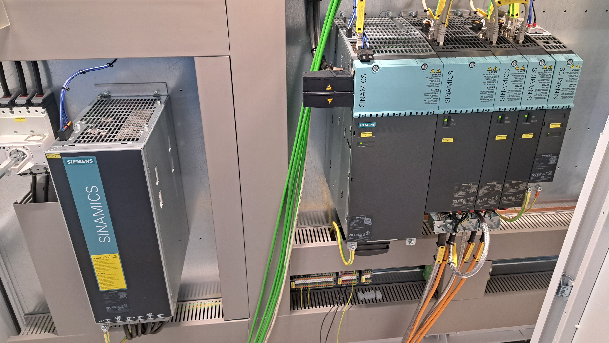

Installation, commissioning and optimization of beverage & packaging lines. Multi-OEM expertise including filling, labeling, blow molding, conveying, inspection and packaging systems.

Installation and commissioning of high-speed PET line including blower, filler and packer.

Performance improvement and downtime reduction on beverage filling system.

Conversion from SIMOVERT MASTERDRIVES to SINAMICS DRIVE with drive cliq technology on the bottle washer.
On-site major overhaul of filling valves, main bearings, and capping heads of mechanical filler and crowner.
Final testing, optimization and ramp-up of production line to full capacity.